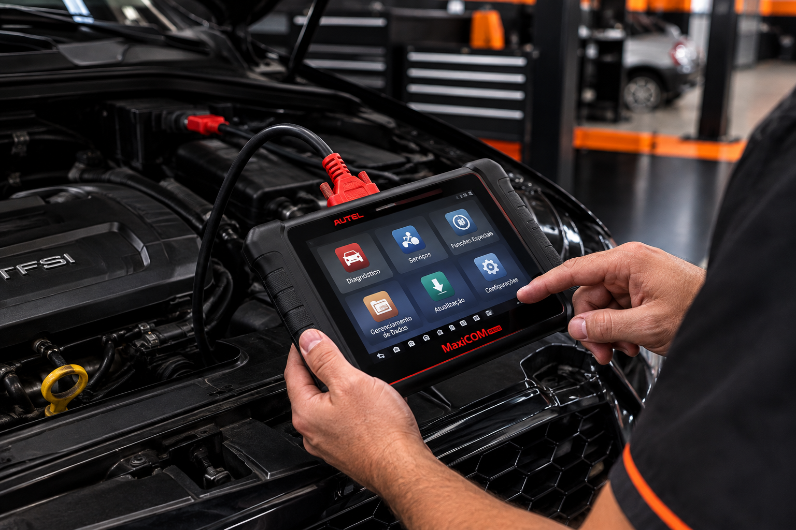
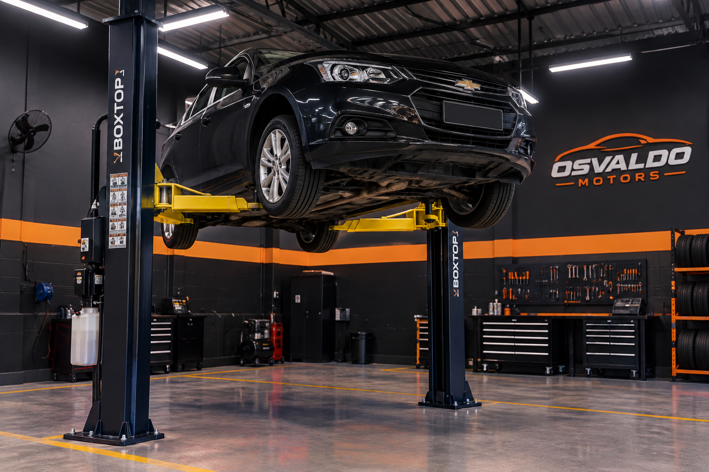

Sobre Nós
Somos uma oficina especializada em manutenção e reparo de veículos. Nossa equipe é composta por profissionais experientes e dedicados a oferecer o melhor serviço para nossos clientes.
Bem-vindo à nossa oficina!
Somos uma oficina especializada em manutenção e reparo de veículos. Nossa equipe é composta por profissionais experientes e dedicados a oferecer o melhor serviço para nossos clientes.
Sistema web de gestão de serviços automotivos desenvolvido para modernizar o atendimento da Oficina do Osvaldo, permitindo o agendamento online de revisões, acompanhamento do status do conserto pelo cliente e controle de orçamento.
Agendamento online de revisões e orçamentos
Painel de acompanhamento do status do veículo em tempo real
Cadastro e histórico de manutenções por placa do veículo
Emissão e envio automático de orçamentos via WhatsApp
| Serviço | Descrição | Preço Estimado |
|---|---|---|
| Troca de Óleo + Filtro | Substituição de óleo lubrificante e filtro de óleo original | R$ 220,00 |
| Alinhamento e Balanceamento | Serviço completo de geometria para as 4 rodas | R$ 120,00 |
| Revisão de Freios | Inspeção de pastilhas, discos e troca do fluido de freio | R$ 280,00 |
| Diagnóstico Eletrônico | Passagem de scanner automotivo e leitura de erros | R$ 150,00 |

